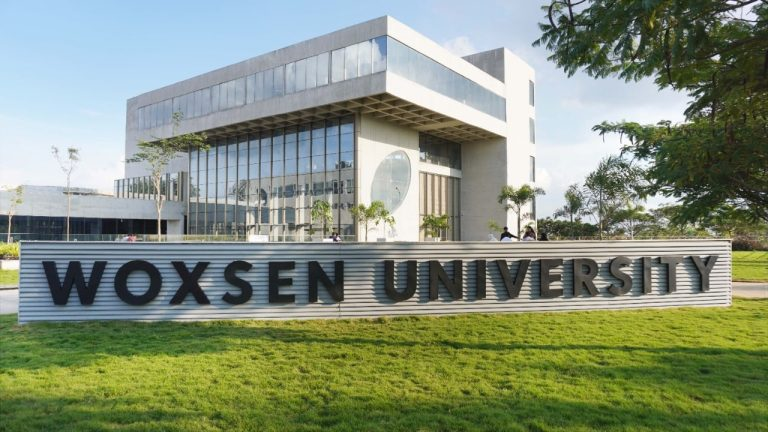
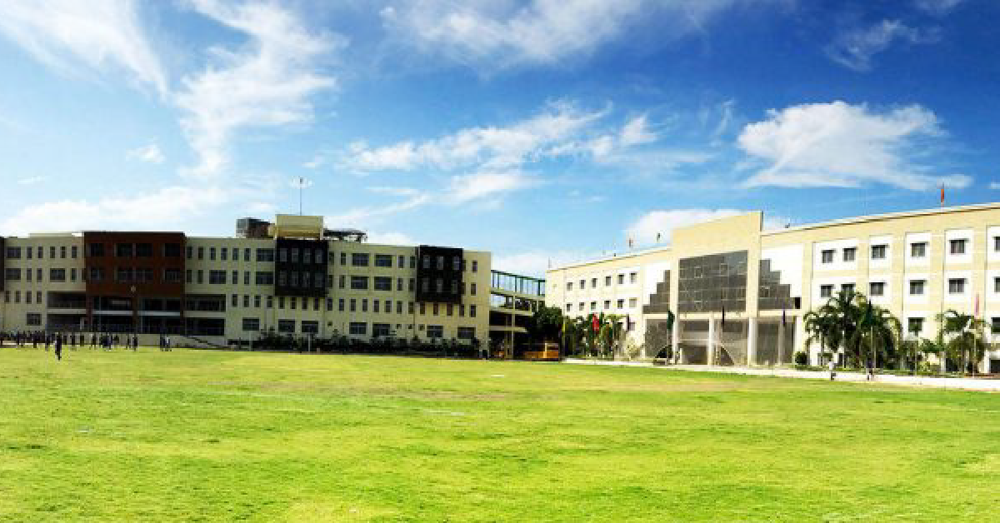

Introduction
1. I am passionate about Artificial Intelligence tech and its impact on the future of our society.
2. I am an insanely curious person who always seeks to meet new people with unique interests.
3. I love to travel and explore different parts of the world.
Over the past two years, I've developed an extensive skill set to prepare for a future career in the tech industry. In particular, I've had professional experience in data science, product management, and technical writing.
Woxsen University
B.Tech in Artificial Intelligence & Data Science, 2021 - 2025
Woxsen taught me just as much outside the classroom as inside. My major instilled in me the critical thinking ability to connect the dots and solve problems creatively. My experience serving on the executive of 2 different clubs showed me the power of leading with empathy, expanded my comfort zone, and elevated my sense of self. My participation in Woxsen's volunteer programs exercised my leadership muscle, cultivated my interest in helping others, and strengthened my tolerance to adversity.
As years pass, Woxsen has enabled me to do the things I love, cultivated my mind and identity, and surrounded me with a wealth of amazing peers. I am looking forward to bringing what I have learned from this educational experience to the real world.

Narayana Junior College
Intermediate, 2019 - 2021
As years pass, Woxsen has enabled me to do the things I love, cultivated my mind and identity, and surrounded me with a wealth of amazing peers. I am looking forward to bringing what I have learned from this educational experience to the real world. During my intermediate at Narayana Junior College, I followed the MPC stream, focusing on Mathematics, Physics, and Chemistry. This rigorous academic path was complemented by my active participation in various Olympiads, as well as my dual commitment to representing my district in archery competitions. This combination of academic excellence and sporting achievements made these two years an enriching and well-rounded period of personal growth and learning.
Delhi Public School
2010 - 2019
My nine-year journey at Delhi Public School was an adynamic blend of education and extracurricular pursuits. As a student, I actively engaged in a variety of activities and societies, including Scouts and Guides, Green Crusaders, Archery, and Football. These experiences not only enhanced my academic learning but also fostered qualities of leadership, teamwork, and environmental awareness. My time at Delhi Public School was a holistic preparation for both personal and academic growth, laying the foundation for my future endeavours.